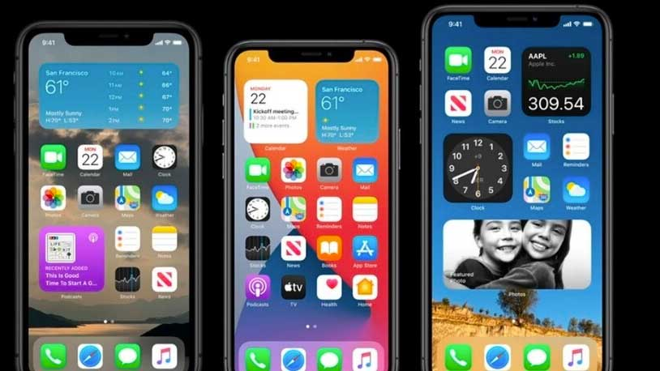
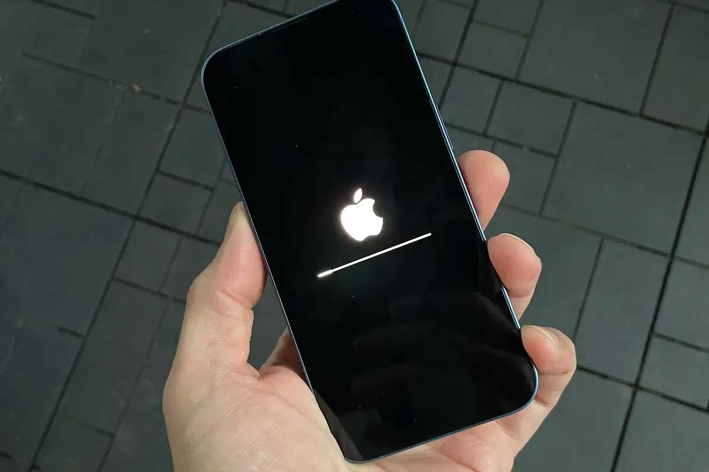
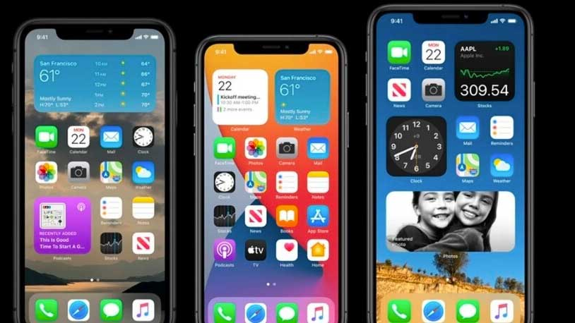
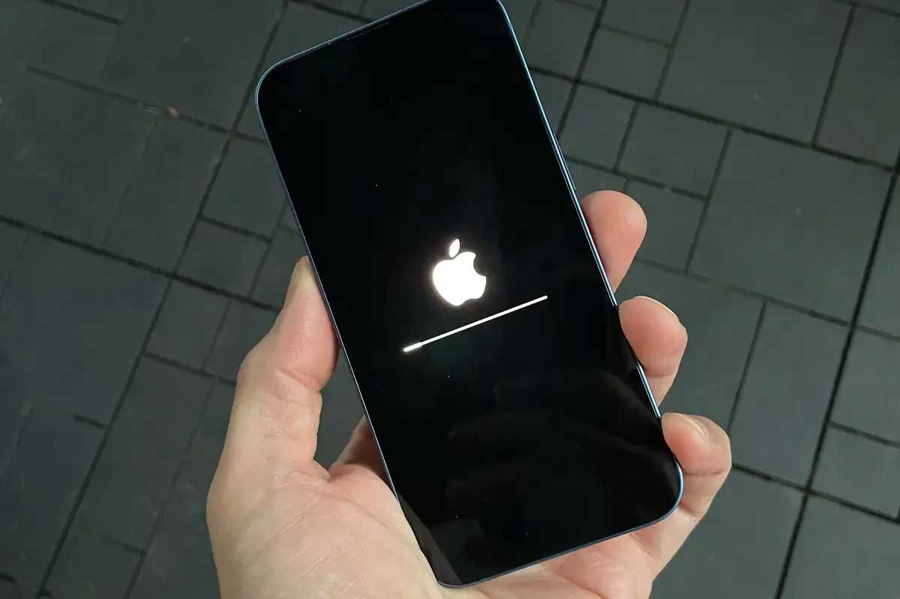

iOS (formerly iPhone OS) is a mobile operating system created and developed by Apple Inc. exclusively for its hardware. It is the operating system that powers many of the company's mobile devices, including the iPhone and iPod Touch; the term also included the versions running on iPads until the name iPadOS was introduced with version 13 in 2019. It is the world's second-most widely installed mobile operating system, after Android. It is the basis for three other operating systems made by Apple: iPadOS, tvOS, and watchOS. It is proprietary software, although some parts of it are open source under the Apple Public Source License and other licenses
Unveiled in 2007 for the first-generation iPhone, iOS has since been extended to support other Apple devices such as the iPod Touch (September 2007) and the iPad (introduced: January 2010; availability: April 2010.) As of March 2018, Apple's App Store contains more than 2.1 million iOS applications, 1 million of which are native for iPads.[11] These mobile apps have collectively been downloaded more than 130 billion times.
In 2005, when Steve Jobs began planning the iPhone, he had a choice to either "shrink the Mac, which would be an epic feat of engineering, or enlarge the iPod". Jobs favored the former approach but pitted the Macintosh and iPod teams, led by Scott Forstall and Tony Fadell, respectively, against each other in an internal competition, with Forstall winning by creating the iPhone OS. The decision enabled the success of the iPhone as a platform for third-party developers: using a well-known desktop operating system as its basis allowed the many third-party Mac developers to write software for the iPhone with minimal retraining. Forstall was also responsible for creating a software development kit for programmers to build iPhone apps, as well as an App Store within iTunes.
The operating system was unveiled with the iPhone at the Macworld Conference & Expo on January 9, 2007, and released in June of that year. At the time of its unveiling in January, Steve Jobs claimed: "iPhone runs OS X" and runs "desktop class applications", but at the time of the iPhone's release, the operating system was renamed "iPhone OS". Initially, third-party native applications were not supported. Jobs' reasoning was that developers could build web applications through the Safari web browser that "would behave like native apps on the iPhone". In October 2007, Apple announced that a native Software Development Kit (SDK) was under development and that they planned to put it "in developers' hands in February". On March 6, 2008, Apple held a press event, announcing the iPhone SDK